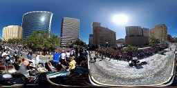
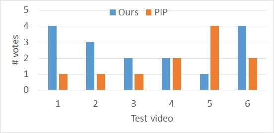

Interactive and Automatic Navigation for 360° Video Playback
KYOUNGKOOK KANG, DGIST SUNGHYUN CHO, DGIST
This HTML file is intended to view with a browser that supports HTML5.
Please note that all video clips in this supplementary material are heavily compressed to reduce the file size.
Most of the videos used in this supplementary material are from either the Pano2vid [Su et al. 2016] or Sports-360 [Hu et al. 2017] datasets.
After each video example, we identify the source of the original videos.
1. User Interaction Demo
Below are demo videos of our interactive video navigation.
Please note that the demo videos are not of the highest quality because of the video capture software.
The demo videos below show two windows side by side,
but the right window is shown only for demonstrating how the camera path moves on the input spherical panorama video.
Click a button on the right to switch to a different example:
The video below shows different paths computed from the initial path planning step.
The path computed using only saliency is not temporally smooth, and jumps between different salient areas.
The conventional smoothness term makes either the path still jump between different areas or too rigid.
On the other hand, the optical flow-based smoothness term helps the path follow a salient object more robustly.
The camera path computed without FoV-aware path planning shows the most salient object (the head of a woman) at the center of the resulting video.
On the other hand, the path computed with FoV-aware path planning shows other salient areas as well as the most salient object better.
Here we show comparisons between previous automatic methods and ours, and our user study results.
As the results of previous methods are cropped from videos that we downloaded from their project websites,
they are of low resolution with compression artifacts.
For fair comparison, we degraded the quality of our results by downsampling and upsampling in our user study.
4.1. Comparison with AutoCam
Among the AutoCam results below, the first and second ones are of [Su et al. 2016], and the others are of [Su and Grauman 2017b].
The results of [Su et al. 2016] are obtained from example videos of [Hu et al. 2017].
The results of [Su and Grauman 2017b] are obtained from its project website.
Click a button on the right to switch to a different example:
We also show detailed user study results.
In our user study, we used nine videos listed below.
(a) Which video shows important events better?
(b) Which video is more comfortable to watch?
(c) Which video do you prefer?
4.3. Comparison with 360 Hyperlapse
Below we show comparisons between 360 Hyperlapse [Lai et al. 2017] and ours.
Note that the input videos are much longer than hyperlapse videos. Thus, we show only some parts of them.
Click a button on the right to switch to a different example:
We also show detailed user study results.
In our user study, we used four videos listed below.

(a) Which video shows important events better?
(b) Which video is more comfortable to watch?
(c) Which video do you prefer?
5. Comparison with Previous Interactive Methods
5.1. Other interactive systems
In our user study, we compare our system with two recent interactive methods: PIP [Lin et al. 2017b], and Shot Orientation [Pavel et al. 2017].
PIP provides picture-in-picture previews of regions of interest, and Shot Orientation provides a simple interface that allows users to quickly change the viewing direction to a region of interest by pressing a button.
As their code is not available, we implemented both methods for the user study.
Below we show short demos of PIP and Shot Orientation.
For the user study, we used six 360 videos listed below.
The videos include both static and dynamic background.
5.3. User study result
(a) Which one is easier to locate important events with?
(b) Which one is more convenient to navigate the video with?
(c) Which one do you prefer to use?

(d) Do you prefer to use a combination of two methods over both of them as they are?
6. 360° Video Re-orientation
(a)
(b)
An interesting application of our automatic navigation is to generate re-oriented 360° videos.
Even wearing a head mounted display (HMD), it can be still difficult to find interesting events as a user must look around in all directions (left image above).
This can make 360° video watching a tiring task.
Instead, we can generate a re-oriented 360° video so that users can simply enjoying watch important events in front of them not looking around too much (right image above).
Below are some examples of re-oriented 360° videos.
To verify the usefulness of our system in re-orienting 360° videos, we conducted an additional small survey.
We prepared three 360° videos listed below, and applied our automatic navigation system to generate re-oriented 360° videos.
Cropped parts of the original videos and their re-oriented results used in the survey are presented below.
The center of the videos corresponds to the front of the viewer.
We recruited six participants.
Each participant was asked to watch three pairs of original and re-oriented videos, and asked two questions:
(a) Which one is more comfortable to watch? and
(b) Choose the level of dizziness you felt watching the video from three levels: 1. uncomfortable to watch, 2. slightly dizzy but still comfortable, and 3) not dizzy at all.
(a) Which one is more comfortable to watch?
(b) The level of dizziness
The bar charts above show a summary of the user study.
While the participants responded that the re-oriented videos were dizzier to watch, they still preferred the re-oriented ones over the original ones.
This shows the potential usefulness of our system in this scenario.
7. Regional Saliency Computation
We use a heuristic approach similar to [Su and Grauman 2017a] to approximate a NFoV region on a spherical panorama in the pre-processing step.
Below is its pseudocode.
Our system may fail to find an optimal camera path when saliency estimation fails.
The video below shows such an example.
Due to the movement and strong contrast of the shadows of people,
the shadows are estimated to be more salient than the people,
so our method shows a wrong direction that show the shadows.
The video below shows another limitation of our method.
In the video, there are multiple salient people running around.
As a result, our system frequently changes the viewing direction from one person to another, which may be against the intention of a user.
8.3. Automatic path update against the intention of a user
Our system is designed to show a user-specified direction for a certain amount of time even if there are no salient objects, and then change the direction to a salient object.
This behavior may somtimes not match the intention of a user.
For example, in the video below, our system originally shows a kid, and a user changes the viewing direction to a climber on the wall who is less salient.
The system shows him for a while, and automatically changes back the viewing direction to the kid, which can be against the user's intention.
9. Evaluation using the Pano2Vid Evaluation Metrics
Finally, we present a preliminary comparison among two versions of AutoCam [Su et al. 2016], [Su and Grauman 2017b], and ours
using the evaluation metrics proposed in [Su et al. 2016].
For evaluation of automatic navigation methods for 360 videos,
Su et al. [2016] proposed two groups of evaluation metrics: HumanCam- and HumanEdit-based metrics.
HumanCam-based metrics measure the quality of an algorithm-generated NFoV video using normal NFoV videos captured by human,
and include Transferability, HumanCam-Likeness, and Transferability.
HumanEdit-based metrics measure the quality of an algorithm-generated NFoV video using human annotations,
and include cosine similarity between the viewing directions of a human viewer and an algorithm output,
and a field-of-view overlap of a human viewer and an algorithm output.
For detailed definitions of the metrics, we refer the readers to [Su et al. 2016].
Among them, we measured distinguishability, transferability, cosine similarity, and overlap.
However, we note that our comparison is INCOMPLETE and only for reference.
Regarding distinguishability and transferability, Su and Grauman [2017b] use 86 Youtube videos,
and regarding cosine similarity and overlap, they use 40 Youtube videos.
Unfortunately, measuring HumanCam-based metrics such as distinguishability and transferrability requires training a video feature extractor that takes tens of days using a modern GPU.
Moreover, some videos are no longer available on Youtube.
Thus, we sampled 36 videos that are used for both HumanCam-based metric and HumanEdit-based metrics, and still available on Youtube,
and measured the metrics mentioned above using them.
The table below shows the comparison.
Higher numbers mean better.
Except for distinguishability, all the measures have values ranging from 0 to 1.
[Su et al. 2016]
[Su and Grauman 2017b]
Ours
Distinguishability
Error rate(%)
12.05
17.28
67.0
Transferability
Human->Auto
0.517
0.591
0.812
Auto->Human
0.584
0.617
0.654
Overlap
Trajectory
0.343
0.442
0.420
Frame
0.530
0.630
0.680
References
Hou-Ning Hu, Yen-Chen Lin, Ming-Yu Liu, Hsien-Tzu Cheng, Yung-Ju Chang, and Min Sun. 2017. Deep 360 pilot: Learning a deep agent for piloting through 360 sports video. In Proc. of CVPR.
Wei-Sheng Lai, Yujia Huang, Neel Joshi, Christopher Buelher, Ming-Hsuan Yang, and Sing Bing Kang. 2017. Semantic-driven generation of hyperlapse from 360 video. IEEE Trans. on Visualization and Computer Graphics, PP (99)(2017), 1-1.
Yung-Ta Lin, Yi-Chi Liao, Shan-Yuan Teng, Yi-Ju Chung, Liwei Chan, and Bing-Yu Chen. 2017b. Outside-In: Visualizing Out-of-Sight Regions-of-Interest in a 360° Video Using Spatial Picture-in-Picture Previews. In Proc. of UIST.
Amy Pavel, Björn Hartmann, and Maneesh Agrawala. 2017. Shot Orientation Controls for Interactive Cinematography with 360 Video. In Proc. of UIST.
Yu-Chuan Su and Kristen Grauman. 2017a. Learning Spherical Convolution for Fast Features from 360° Imagery. In Proc. of NIPS.
Yu-Chuan Su and Kristen Grauman. 2017b. Making 360° Video Watchable in 2D: Learning Videography for Click Free Viewing. In Proc. of CVPR.
Yu-Chuan Su, Dinesh Jayaraman, and Kristen Grauman. 2016. Pano2Vid: Automatic Cinematography for Watching 360° Videos. In Proc. of ACCV.